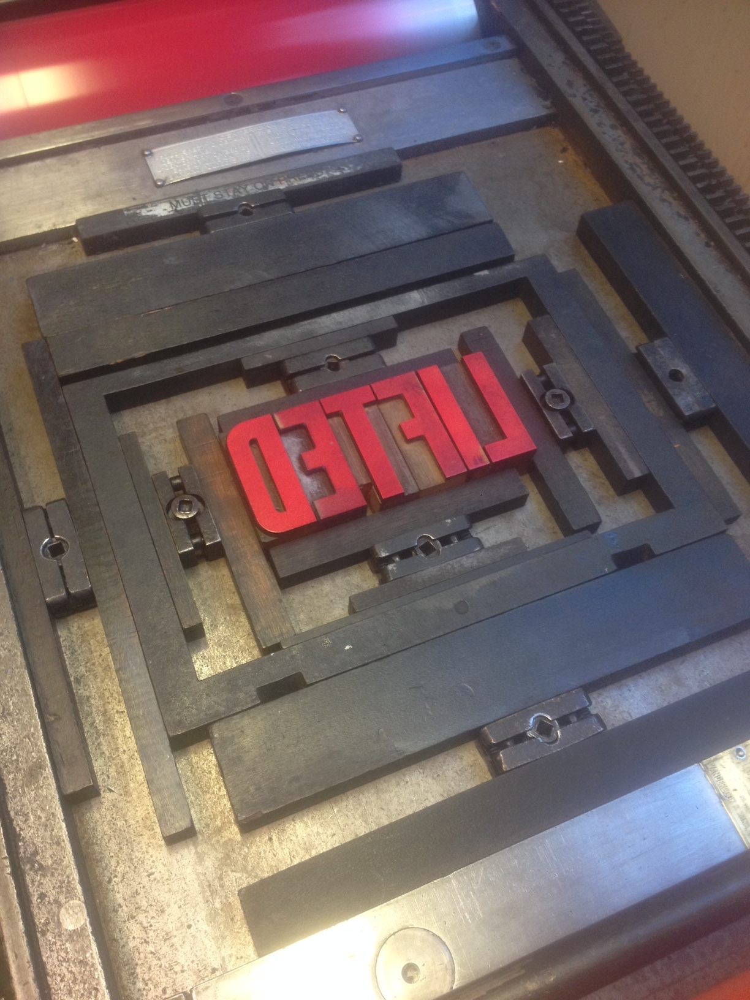

Lifted
A year living by the shore of the Canadian city of Vancouver resulted in a hand-made book that sets off the beginning of many others. 'Lifted' is an exploration of this west-coastal city through twenty-one poems and seven drawings from observation, where its physical appearance and the current twenty-first century turmoil are both documented.

MEDIUM
Covers: Acrylic on maps and letterpress
Text: Inkjet printer
Size: 8.5 x 5.5 inches